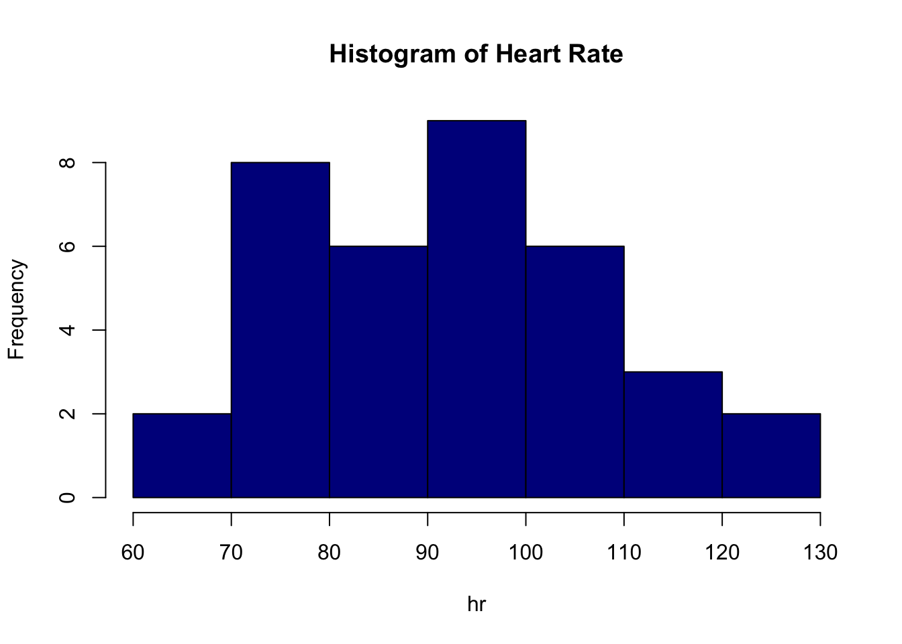
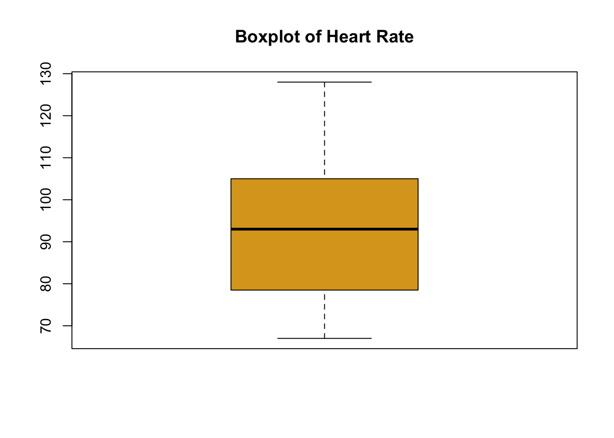

3+4[1] 73-4[1] -13*3[1] 95/3[1] 1.666667The purpose of this document is to begin to familiarize you with the commonly used, open source, statistical software package R. As a language, R can function as an object orientated programming language. While R can be command-line driven, you can also write and save files or scripts. Commands can be run from the script as well. But it is also user friendly and many of problems we will examine in this class can be done using pre-existing functions.
RThe first step is to go to http://cran.r-project.org. Select the appropriate download based on your operating system. R is available for Windows, Mac, and Linux users. What you are downloading is the base package. Much of the expanded functionality of R comes from user contributed packages. Once R is downloaded, click on the shortcut to open the program. You will first see the console. This is the command-line component of R.
Some people find it easier to use R Studio as the interface is a bit more user-friendly. You are encouraged to use it and may download it at https://www.rstudio.com (just be sure to download the free version). This is how we will use R in lecture. Note though that you must download “base R” first from http://cran.r-project.org. Once you have, then download https://www.rstudio.com.
In the command line, you can type a number of numerical calculations for which R will immediately return a response. For instance, try typing the following, being sure to hit “ENTER” or “RETURN” when you have completed each line:
3+4[1] 73-4[1] -13*3[1] 95/3[1] 1.666667R follows the standard order of operations using parentheses. So
(3 + 10)/2[1] 6.5will differ from
3 + 10/2[1] 8It’s important to remember proper parentheses placement!
Note further too that “+”, “-”, “*”, and “/” perform addition, subtraction, multiplication, and division. When you hit “ENTER” after each line R returned the result of the line you entered. R has a number of built-in mathematical functions as well. For example, we may want to take the \(\log\) (defaults to base \(e\)) of a number:
log(10)[1] 2.302585Or we may wish to exponentiate a number:
exp(3)[1] 20.08554Maybe we want to square a number or raise a number to a power:
4^2[1] 164^5[1] 1024We can also take the square-root of a number:
sqrt(27)[1] 5.196152As we mentioned in the intro, R can act like an object oriented programing language. Let’s see how this works. Say we want to save those ten random variables in R’s memory. Suppose we want to save a particularly complex calculation, we use either lower or upper case letters (or words) to which we assign a value like so
x <- exp(log(3) - 1.96*log(2))
x[1] 0.7710854lower case x is now saved as an object in R’s memory. R will distinguish between lower and upper case so if next define X to be something,
X <- exp(log(3) + 1.96*log(2))
X[1] 11.67186x[1] 0.7710854x is still the same. Since x and X aren’t very descriptive, we could use a word to save our object. It’s important to test your candidate word first to make sure you aren’t overwriting some built-in R object. Suppose we wish to define multiple elements of the calculation above. Let’s test out some names first
> theta
Error: object 'theta' not found
> se
Error: object 'se' not found
> lower
Error: object 'lower' not found
> upper
Error: object 'upper' not foundEach of these “errors” tell us R does not have any objects currently named theta, se, lower, or upper so we are free to assign our values as we wish:
theta <- log(3)
theta[1] 1.098612se <- log(2)
se[1] 0.6931472lower <- exp(theta - 1.96*se)
lower[1] 0.7710854upper <- exp(theta + 1.96*se)
upper[1] 11.67186After each assignment, we have printed out the result. We don’t need to do this, but it is nice to check—although use this with caution. When we start working with data, printing out the entire dataset might not be useful. If you use R Studio, there is a viewing GUI where you can look at data. R is most powerful for its probabilistic, statistical, and graphical abilities. We will discuss many of these during the semester, beginning with some ideas from probability.
RWe can use assignments to, for example, construct sample spaces. First check to see if S is already a defined object in R:
> S
Error: object 'S' not foundThus we may use S for the name of our sample space. Next, consider the sample space you want to define. The easiest way to do assign to the sample space a number. This approach requires the sample space be finite. If we are rolling a single six sided die, we could define S to be
S <- 1:6where 1:6 generates a vector of numbers from 1 to 6, by 1. We can count the elements in S using the function length() like so
length(S)[1] 6Note: this assumes all the elements of S are unique, i.e. S contains only simple events!
We can then use R to count the number of elements of S that satisfy a specific criteria. Suppose we’re interested in the proportion of elements less than 3. First, we define the event E3 as
E3 <- which(S < 3)Then we can determine the probability using the length() function:
length(E3)/length(S)[1] 0.3333333In this way, we can think of the length() function as equivalent to the function \(\#()\) from the notes. We can use R to calculate other counting-related quantities from the notes.
R can also perform unions and intersections symbolically. Define the following sets:
A <- c('a1', 'a2')
B <- c('a1', 'a3', 'a5')Here we use R to construct sets, or vectors in R parlance, of non-numeric elements. We can then apply the union() and intersect() functions to perform \(A \cup B\) and \(A \cap B\), respectively:
union(A,B)[1] "a1" "a2" "a3" "a5"intersect(A,B)[1] "a1"If we assign these functions to objects, we can then use R to help us calculate simple probabilities. Consider the roll of a 20-sided die. We first construct the sample space:
S <- paste('E', 1:20, sep = '')
S [1] "E1" "E2" "E3" "E4" "E5" "E6" "E7" "E8" "E9" "E10" "E11" "E12"
[13] "E13" "E14" "E15" "E16" "E17" "E18" "E19" "E20"In the above code, the paste() function streamlines the construction of the space. It tells R to paste the letter ‘E’ together with each integer in the sequence 1 to 20. Now define two events. First, define the even that a single roll is an odd number:
O <- S[seq(1, 20, by = 2)]
O [1] "E1" "E3" "E5" "E7" "E9" "E11" "E13" "E15" "E17" "E19"Because of how we constructed \(S\), we only need to extract the odd elements to form \(O\). The square brackets, \([\ ]\), perform the extraction while the function seq(1, 20, by = 2) builds a vector of all the odd numbers from between 1 and 20. Next construct the event that the roll is equal to 16 or higher:
G16 <- S[16:20]
G16[1] "E16" "E17" "E18" "E19" "E20"Again, because \(S\) is ordered, we can construct \(G16\) by selecting the 16th through 20th elements using the subset brackets, \([\ ]\). Now we can ask what the probability of each event is on a single toss. Remember, the length() function is the R equivalent to the \(\#(\cdot)\) function from lecture. The probability of rolling an odd number:
length(O)/length(S)[1] 0.5The probability of rolling a number 16 or more:
length(G16)/length(S)[1] 0.25The probability of either an odd number, a number 16 or more, or both:
length(union(O,G16))/length(S)[1] 0.65The probability of both an odd number and one that is 16 or more:
length(intersect(O,G16))/length(S)[1] 0.1If we save some of the probabilities from above, we can find the conditional probability of rolling 16 or more given an odd roll:
POnG16 <- length(intersect(O,G16))/length(S)
PO <- length(O)/length(S)
POnG16/PO[1] 0.2To do permutations, we can use the function factorial(). Suppose we want to count the number of possible ways of ordering baseball players for a starting lineup (the initial order in which players will bat). There are nine players available. The number of possible orders is
factorial(9)[1] 362880Now suppose we want to select four of the players from the nine for the first four spots in the lineup. The first selected will bat first, second will bat second, and so on. Some might argue the order matters. How many ways are there of selecting four players from nine when order matters? First, to make our code more useable, let’s define two values n and r:
n <- 9
r <- 4R also has a choose function, choose() which takes two arguments. The first argument is n and the second argument is k (what we have referred to as r). If order doesn’t matter in selecting the first four to bat, the number of ways of selecting four players from nine is
choose(n, r)[1] 126where n and r are as previously defined.
We may use the choose() function to calculate, for example, the poker related questions. On the first deal of a game of five card draw, the probability of being dealt a three of a kind is
(choose(13,1)*choose(4,3)*choose(12,2)*choose(4,1)*choose(4,1))/choose(52,5)[1] 0.02112845Note that the parenthesis placement around the numerator is not, technically, necessary. However, it is good practice.
R is useful for its ability to pseudo-randomly generate numbers. Using this, we can run probability experiments many times over to empirically determine probabilities.
Consider our favorite example of rolling a six sided die. We can simulate this in R by first assigning the numbers to a sample space:
S <- 1:6To “randomly” sample from this space, we use the function sample():
sample(S, 1)[1] 4Did everyone get a 3? Probably not. In the in-class demonstration we probably won’t get a 3 either. Let’s collect the all the numbers you sampled a create a distribution for the roll of the die. We’ll formalize the meaning of distribution later on, but for now we can think of it as a mathematical representation of the experiment. Everyone now give me the number you sampled and we will create a vector in R (don’t lie!):
samps <- c(...)samps <- c(5,3,4,1,2,5,3,6,1,6,4,2,3,4,6,1,2,3,4,6,2,3)Once we have our collected sample, we can ask questions about it. For example, we can find the probability that the roll is four or less:
L4 <- which(samps <= 4)
length(L4)/length(samps)[1] 0.7272727We can now try to decipher if some of your were lying. If the sample were truly random, we’d expect each number to appear roughly the same number of times. We can check this with the function table():
table(samps)samps
1 2 3 4 5 6
3 4 5 4 2 4 We could also calculate the probability of getting each roll,
table(samps)/length(samps)samps
1 2 3 4 5 6
0.13636364 0.18181818 0.22727273 0.18181818 0.09090909 0.18181818 Do we suspect anyone of being dishonest in what they got for their roll?
Taking a sample 40 in this fashion can, obviously, be tedious. However, R allows us to randomly sample more than once quite easily. To obtain a sample of size 40, we simply increase the number in the second argument. But we also need to instruct R to sample with replacement, i.e. sampling where the drawn value is put back in and can be re-sampled—effectively it’s what we did together as a class.
sample(S, 40, replace = TRUE) [1] 1 1 5 1 1 1 3 2 2 2 2 1 5 2 2 2 5 5 1 3 4 2 5 4 1 5 3 3 6 6 5 1 4 3 4 2 5 3
[39] 1 5Note that because the numbers are generated pseudo-randomly, you won’t have the same values. But we can make R tell produce the same values if we want by setting the seed. Let’s set the seed to 27:
set.seed(27)
sample(S, 40, replace = TRUE) [1] 5 2 6 1 3 1 1 1 1 1 5 3 3 6 1 4 1 6 4 3 1 3 1 1 5 2 4 5 1 4 4 4 1 2 2 1 1 1
[39] 6 5Now everyone should get the same numbers. And if we were to re-run these two lines of code over and over again on our machines, we’d get the same set of numbers. Let’s investigate our sample in the same way as before. Save this sample using
set.seed(27)
samps27 <- sample(S, 40, replace = TRUE)and then use the table() function on it to count the occurrences of the events:
table(samps27)samps27
1 2 3 4 5 6
16 4 5 6 5 4 samps27 [1] 5 2 6 1 3 1 1 1 1 1 5 3 3 6 1 4 1 6 4 3 1 3 1 1 5 2 4 5 1 4 4 4 1 2 2 1 1 1
[39] 6 5and check the probabilities:
table(samps27)/length(samps27)samps27
1 2 3 4 5 6
0.400 0.100 0.125 0.150 0.125 0.100 samps27 [1] 5 2 6 1 3 1 1 1 1 1 5 3 3 6 1 4 1 6 4 3 1 3 1 1 5 2 4 5 1 4 4 4 1 2 2 1 1 1
[39] 6 5The ones are a little high and the fives are a little low. This may be due to random chance alone. If we increase the number of samples we take, we might get a clearer picture:
set.seed(27)
samps400 <- sample(S, 400, replace = TRUE)
table(samps400)samps400
1 2 3 4 5 6
74 60 67 67 63 69 samps400 [1] 5 2 6 1 3 1 1 1 1 1 5 3 3 6 1 4 1 6 4 3 1 3 1 1 5 2 4 5 1 4 4 4 1 2 2 1 1
[38] 1 6 5 1 4 4 6 3 3 1 5 4 6 3 5 3 3 3 2 4 4 4 5 3 3 4 4 5 3 5 6 4 1 3 5 4 2
[75] 3 5 2 5 4 5 2 3 2 5 1 5 5 6 5 2 2 3 1 6 4 1 1 3 6 3 5 1 3 5 6 5 3 4 1 1 4
[112] 4 1 3 2 1 1 3 5 1 2 2 3 2 4 1 1 2 1 3 5 5 4 6 4 2 2 5 1 2 4 2 2 6 3 5 4 4
[149] 4 6 6 1 2 4 6 6 5 1 6 4 5 6 3 3 6 6 2 1 6 4 4 3 4 2 6 1 3 5 1 5 3 1 6 2 2
[186] 3 6 5 3 3 4 1 1 3 6 6 2 3 3 4 5 2 5 4 1 6 2 2 1 5 6 1 1 6 6 4 2 3 6 2 2 6
[223] 3 2 4 4 5 5 6 6 4 6 6 5 2 4 5 5 4 2 3 5 3 2 2 4 6 5 1 2 4 1 1 4 4 1 2 1 1
[260] 1 5 3 4 6 3 3 6 4 4 6 6 1 5 3 6 2 1 5 5 6 6 1 1 5 4 4 6 1 2 4 4 6 3 3 1 2
[297] 2 5 3 6 1 2 5 1 2 4 1 3 6 6 5 1 6 6 6 1 6 5 4 3 6 6 6 4 3 3 3 2 2 3 5 3 5
[334] 6 6 2 2 1 6 5 1 1 4 2 2 5 2 4 6 3 1 4 2 1 2 5 5 4 6 2 4 5 1 4 5 1 6 5 3 6
[371] 4 2 3 4 3 3 6 3 5 4 2 4 1 4 6 3 2 3 6 3 5 2 6 3 5 5 6 1 1 3table(samps400)/length(samps400)samps400
1 2 3 4 5 6
0.1850 0.1500 0.1675 0.1675 0.1575 0.1725 This is getting closer! What should we obtain theoretically?
rep(1/6, 6)[1] 0.1666667 0.1666667 0.1666667 0.1666667 0.1666667 0.1666667This function, rep(), repeats the first value the second value number of times.
How many samples do you need to take to reach this? Try experimenting with larger and larger numbers. For reproducibility, set the set to 27 before each sampling. Try starting with 1000 samples and increase until you get values equal to the theoretical values out to three decimals.
set.seed(27)
sampsLarge <- sample(S, 1000, replace = TRUE)
table(sampsLarge)/length(sampsLarge)sampsLarge
1 2 3 4 5 6
0.178 0.156 0.147 0.175 0.163 0.181 Once you reach a reasonable approximation of the theoretical values, display the table in your console and compare to what you should get like so:
rep(1/6, 6)[1] 0.1666667 0.1666667 0.1666667 0.1666667 0.1666667 0.1666667table(sampsLarge)/length(sampsLarge)sampsLarge
1 2 3 4 5 6
0.178 0.156 0.147 0.175 0.163 0.181 sampsLarge [1] 5 2 6 1 3 1 1 1 1 1 5 3 3 6 1 4 1 6 4 3 1 3 1 1 5 2 4 5 1 4 4 4 1 2 2 1 1
[38] 1 6 5 1 4 4 6 3 3 1 5 4 6 3 5 3 3 3 2 4 4 4 5 3 3 4 4 5 3 5 6 4 1 3 5 4 2
[75] 3 5 2 5 4 5 2 3 2 5 1 5 5 6 5 2 2 3 1 6 4 1 1 3 6 3 5 1 3 5 6 5 3 4 1 1 4
[112] 4 1 3 2 1 1 3 5 1 2 2 3 2 4 1 1 2 1 3 5 5 4 6 4 2 2 5 1 2 4 2 2 6 3 5 4 4
[149] 4 6 6 1 2 4 6 6 5 1 6 4 5 6 3 3 6 6 2 1 6 4 4 3 4 2 6 1 3 5 1 5 3 1 6 2 2
[186] 3 6 5 3 3 4 1 1 3 6 6 2 3 3 4 5 2 5 4 1 6 2 2 1 5 6 1 1 6 6 4 2 3 6 2 2 6
[223] 3 2 4 4 5 5 6 6 4 6 6 5 2 4 5 5 4 2 3 5 3 2 2 4 6 5 1 2 4 1 1 4 4 1 2 1 1
[260] 1 5 3 4 6 3 3 6 4 4 6 6 1 5 3 6 2 1 5 5 6 6 1 1 5 4 4 6 1 2 4 4 6 3 3 1 2
[297] 2 5 3 6 1 2 5 1 2 4 1 3 6 6 5 1 6 6 6 1 6 5 4 3 6 6 6 4 3 3 3 2 2 3 5 3 5
[334] 6 6 2 2 1 6 5 1 1 4 2 2 5 2 4 6 3 1 4 2 1 2 5 5 4 6 2 4 5 1 4 5 1 6 5 3 6
[371] 4 2 3 4 3 3 6 3 5 4 2 4 1 4 6 3 2 3 6 3 5 2 6 3 5 5 6 1 1 3 4 5 1 6 3 2 6
[408] 4 5 6 2 6 3 6 1 4 6 4 1 1 4 5 2 2 5 6 5 3 4 2 6 4 6 5 6 6 4 1 1 5 4 6 4 4
[445] 1 5 3 2 2 2 6 2 2 3 3 5 1 2 6 3 1 2 5 2 5 3 1 1 2 4 6 3 6 6 4 5 5 6 5 1 1
[482] 5 5 3 3 3 5 6 1 6 6 3 2 6 1 2 5 6 1 5 4 2 5 6 4 5 5 5 1 1 2 1 5 3 3 4 5 3
[519] 4 6 4 3 1 4 2 6 4 6 3 4 6 1 5 4 5 4 6 5 6 6 5 5 4 3 6 4 4 3 6 1 6 2 1 4 3
[556] 4 6 4 3 3 1 2 2 2 3 5 5 4 3 3 4 4 1 6 1 5 1 1 3 5 2 2 4 1 6 2 1 2 1 5 3 2
[593] 1 4 1 2 6 5 6 5 4 6 2 5 2 4 6 4 6 5 4 2 1 5 5 5 4 6 1 1 3 2 2 3 3 4 3 2 2
[630] 4 3 5 2 2 5 2 6 5 5 6 2 1 1 1 6 2 3 3 1 4 4 5 4 4 3 5 5 4 4 4 3 1 5 6 6 1
[667] 4 6 5 5 1 3 2 2 3 3 1 5 5 1 2 1 1 1 5 4 4 1 2 6 5 5 5 5 4 1 6 3 5 2 1 4 2
[704] 4 1 1 6 1 4 2 2 1 6 2 6 4 5 3 1 3 2 6 4 4 5 6 5 6 6 5 4 5 4 1 3 6 2 5 1 6
[741] 1 2 1 1 3 4 3 6 3 4 6 3 5 3 6 1 3 2 4 1 3 3 6 2 3 3 2 4 3 4 2 5 1 2 3 1 2
[778] 5 2 2 1 2 5 1 5 5 2 4 2 2 6 6 4 6 5 4 4 3 1 4 1 1 6 6 2 6 4 4 1 6 5 3 5 4
[815] 1 6 5 2 6 1 4 1 2 5 2 6 4 1 6 6 4 4 4 2 6 5 5 6 6 2 5 6 6 4 1 4 2 4 3 4 2
[852] 5 2 6 6 6 2 4 6 1 6 3 4 4 3 6 6 6 1 1 1 6 3 1 3 5 2 2 5 1 6 3 5 1 6 2 5 5
[889] 6 4 4 6 4 6 4 4 1 4 2 4 6 1 3 1 5 4 3 4 4 1 5 5 4 5 1 1 5 3 1 6 3 1 6 5 4
[926] 6 3 3 6 2 4 5 1 6 4 4 6 5 3 5 1 6 4 6 1 1 3 6 1 1 2 2 6 1 1 4 2 6 1 6 3 5
[963] 1 4 4 2 2 2 5 2 4 2 2 3 6 4 3 5 1 2 6 3 3 2 2 5 3 2 2 3 5 6 1 2 6 2 4 1 4
[1000] 3The first represents the theoretical distribution while the second represents the empirical or sampled distribution.
Suppose we wanted to simulate rolls from a weighted die where the five and six are most likely to be rolled, the three and four are next likely, and the one and two are least likely with probabilities, in order, of 3/12, 3/12, 2/12, 2/12, 1/12, 1/12. In R, we can combine these into a single object (called a vector) using the function c() like so:
wprobs <- c(1/12, 1/12, 2/12, 2/12, 3/12, 3/12)Note that we must make sure the order of the probabilities reflects the order in the sample space, which will be 1 to 6. To simulate the weighted die, we use sample() but feed R the additional argument of prob = wprobs like so:
S <- 1:6
set.seed(16)
sample(S, 10, replace = TRUE, prob = wprobs) [1] 4 5 6 5 2 6 5 4 2 5We can sample from larger sample spaces as well. Suppose we number every student in this class. There are 39 students enrolled, if we number you 1 to 39 alphabetically, we can randomly sample students from the class. Suppose we take a sample of size 10:
S <- 1:39
set.seed(714)
sample(S, 10) [1] 33 14 7 30 38 8 13 2 29 6We could then measure a variable (or variables) on each student in this sample (say height or major or what your favorite campus spot is).
As we mentioned above, R has many packages available. To load a package takes two steps if it hasn’t previously been installed and one step if it has. The function to install a package is install.packages(). Let’s install the package ISwR which is an R package for Intro Statistics with R (hence ISwR). First type the following into the console.
> install.packages('ISwR')If you are using RStudio, the rest of the work will be done for you. In fact, RStudio when encountering code that requires a certain package you do not have download may prompt you to install the package in a banner across the top. If you are using base R, you will need to select a mirror. It’s best to choose the mirror that is geographically closest to you. There is one in TN which should be good, but any in the US will work, scroll down to them and select one. Once you’ve selected a mirror, the download will begin. If you use RStudio, this selection should be done for you. Either way, the output in the console should look like this:
> install.packages('ISwR')
There is a binary version available but the source version is later:
binary source needs_compilation
ISwR 2.0-7 2.0-8 FALSE
installing the source package `ISwR'
trying URL 'https://cran.rstudio.com/src/contrib/ISwR_2.0-8.tar.gz'
Content type 'application/x-gzip' length 164076 bytes (160 KB)
==================================================
downloaded 160 KB
* installing *source* package `ISwR' ...
** package `ISwR' successfully unpacked and MD5 sums checked
** R
** data
*** moving datasets to lazyload DB
** inst
** preparing package for lazy loading
** help
*** installing help indices
** building package indices
** testing if installed package can be loaded
* DONE (ISwR)
The downloaded source packages are in
`/private/var/folders/qb/vlrpf9pj4mg01dg2zjh_tt140000gn/T/RtmpOnTpwI/downloaded_packages'Now that we’ve downloaded the package, we need to load it into our console. To do this we will use the function library(). Note that once you’ve downloaded a package, to use it in future sessions all you need to do is run this command (you do not have to install it again). Further, if you don’t close your session of R, all libraries you loaded will remain there. If you do close R, however, you will need to reload, using library() any packages you wish to work with. Now lets load the ISwR package into the console.
# install.packages('ISwR')
library(ISwR)Loading ISwR should not return anything if it was successful. Among other features, ISwR has a number of interesting (albeit old) datasets. For example, the dataset heart.rate has the heart rates from nine patients with congestive heart failure before and shortly after administration of enalaprilat, an ACE inhibitor and antihypertensive drug. We could generate a histogram of this data using:
with(heart.rate, hist(hr, col = 'darkblue', main = 'Histogram of Heart Rate'))
Notice we added the argument col = 'darkblue' to change the color of the histogram. Other colors are available, see http://www.stat.columbia.edu/~tzheng/files/Rcolor.pdf. Alternatively, we could construct a boxplot:
with(heart.rate, boxplot(hr, col = 'goldenrod', main = 'Boxplot of Heart Rate'))
In the commands for both figures, we see the function with(). The data is housed in the object hear.rate, the column labeled hr (you can see the full data by entering View(heart.rate) into the console). So we are telling R, with the data frame in the first argument, execute the code in the second argument.